Descubra a Magia que
Sempre Foi Sua!
Chega de pilhas de trabalho, rotinas que esgota
e sonhos engavetados. Aqui você aprende magia
prática para a vida real!
Trilhas do Conhecimento
Escolha seu caminho e a magia se adapta a você!
✦Trilhas pensadas para diferentes momentos e necessiadades da sua jornada.

Subsistência Arcana Para Iniciantes
A arte de continuar existindo.
Matérias:
Alquimia Financeira
Poções Energéticas I e II
Magia Cotidiana Aplicada
Herbologia Mística
Encantamentos Domésticos

Cronomancia Aplicada a CLT
Dedicada ao estudo do tempo, atrasos e prazos impossíveis.
Matérias:
Manipulação Temporal Básica
Adivinhação de Prazos
Navegação Astral para Fugir de Reuniões
Teoria dos Feriados Prolongados

Relações com Entidades Hostis
Para quem trabalha com público.
Matérias:
Defesa Contra Clientes das Trevas
Leitura Mental
Comunicação Interespécies
Magia das Ilusões
Negociação com Criaturas Fantásticas
Defesa Mágica

Exploração dos Arcanos da Mente
Curso obrigatório da Universidade.
Matérias:
Feitiços de Dissociação
Invocação de Pequenas Alegrias
Comunicação com Espíritos
Leitura de Sonhos
Rituais de Recuperação de Energia

Estudos Econômicos Ocultos
Ninguém sai rico, mas todos entendem o mecanismo da tragédia.
Matérias:
Alquimia Financeira
Transmutação de Pontos em Passagens
Encantamentos de Economia Doméstica
Runas de Prosperidade
Adivinhação Econômica
História dos Salários Desaparecidos

Comunicação Mística Interespécies
A maioria dos problemas nasce de mensagens mal interpretadas.
Matérias:
Linguística Arcana
Tradução de Mensagens Ambíguas
Diplomacia Mágica
Retórica Encantada

Bacharelado em Engenharia Arcana
Entenda definitivamente como a magia funciona.
Matérias:
Alquimia
Encantamentos Básicos
Encantamentos Avançados
Construção de Artefatos
Runologia
Teoria da Energia Arcana

Exploração e Aventuras no Mundo Místico
Para queles que pretendem continuar na área de exploração do mundo mágico.
Matérias:
Criaturas Fantásticas
Sobrevivência em Masmorras
Magia Espacial e Dimensional
Navegação Astral
Cartografia Mística
Primeiros Socorros em criaturas místicas
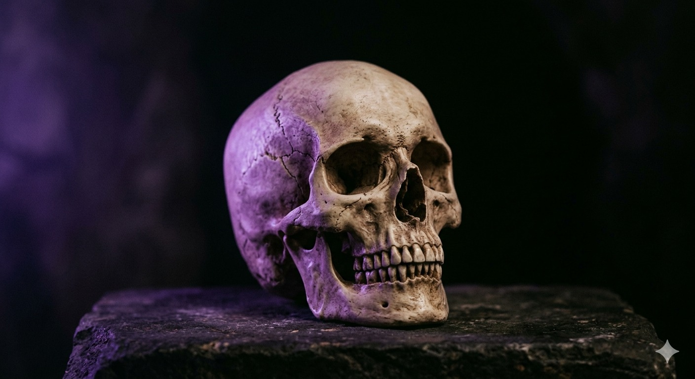
Necromancia e Estudos do Além
Para quem já morreu por dentro, mas continua comparecendo às reuniões.
Matérias:
História da Necromancia
Exorcismo de Planilhas Amaldiçoadas
Ética da Ressurreição
Gestão de Maldições Hereditárias
Avaliações de ex-alunos
@Dumb_oBruxão
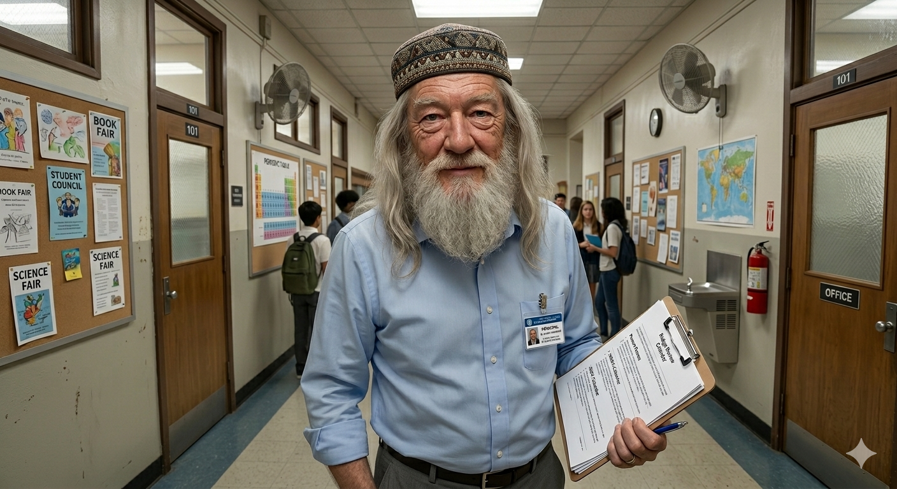
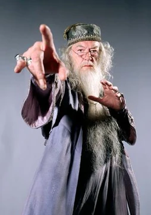
Antes de estudar na UMB, fazia parte do RH de uma empresa contabilidade, ela abriu-me as portas com sua filosofia curiosamente sábia: até o cansaço pode ensinar magia, se bem compreendido.
@Donnodaspedra
A UMB apresenta um uso incomum da magia aplicada ao esgotamento humano. Funciona de forma eficiente, embora levante questões éticas sobre manipulação de percepção temporal. Ainda assim, é uma instituição interessante.
@Magica_de_circoZatt
A UMB é simplesmente caótica do jeito certo kkk.
Ajuda a gente a lidar com o burnout como se fosse só mais um truque de palco.
@HomemPassaro
A UMB é como uma casa que respira junto com seu cansaço.
Estranha, bonita… e um pouco necessária.
@Fadas_odeiamMerlin
A UMB não cura o colapso — ela o transforma em domínio.
É uma instituição sofisticada, para quem entende o poder do próprio esgotamento.
@VelhoConfuso

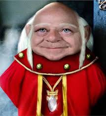
Boa escola… vocês estão quase prontos… quase… Mas me ajudaram bastante no meu ensino e me tiraram das obras, minhas costas doem menos agora...
@HermioneGranger
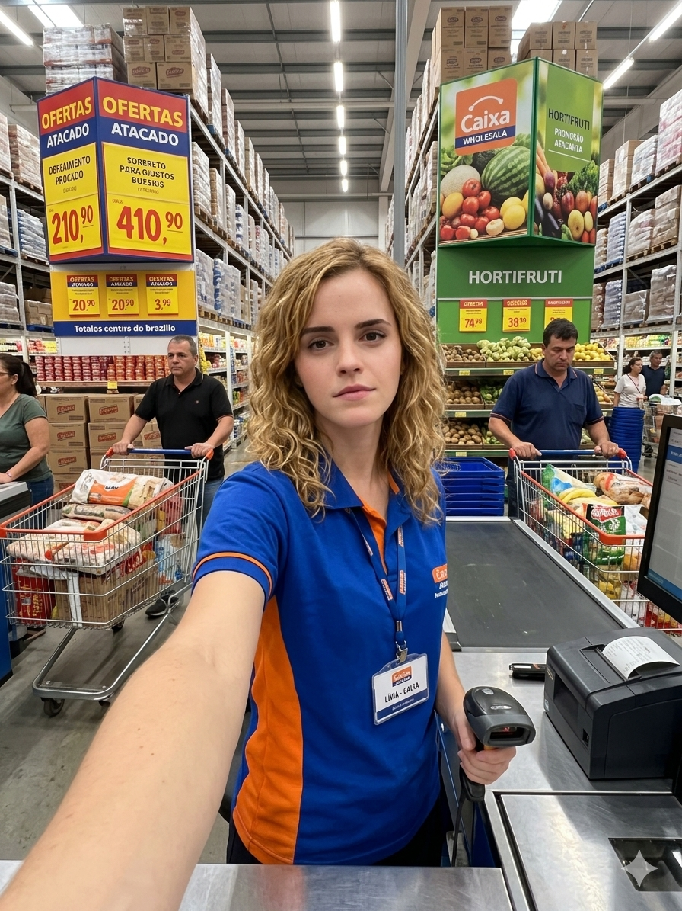
A UMB é bem organizada e eficiente. Mesmo métodos não convencionais acabam funcionando no aprendizado de magia aplicada ao estresse.
@Gandolfofinho
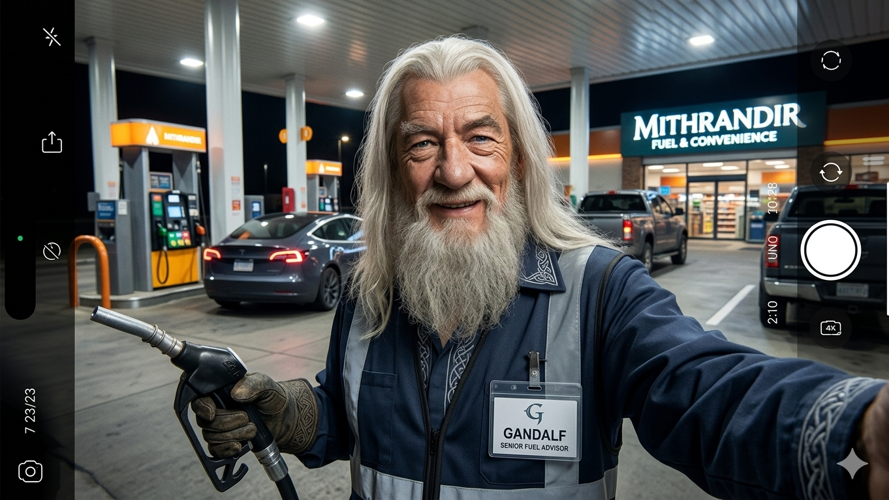
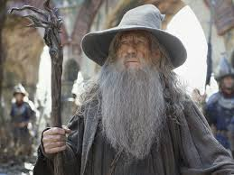
Excelente instituição. Mesmo os mais cansados encontram caminho. Só não se atrase para a segunda aula. O professor não fica nada feliz.
@Conselheiro123
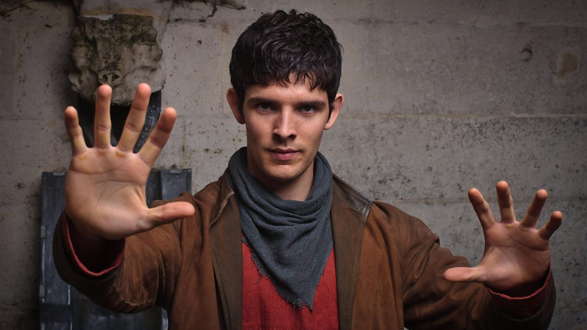
Boa escola. Ensina magia e descanso. Importante.
@Mago_dosGames
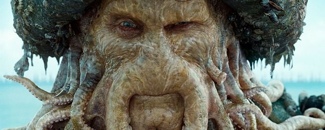
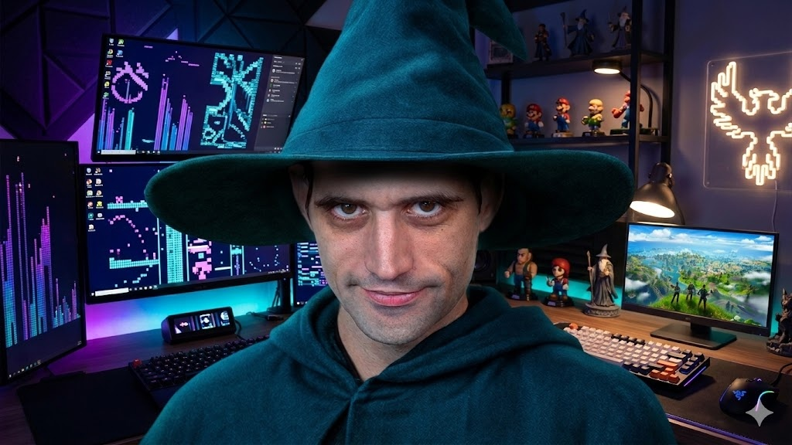
EM TODA MINHA CARREIRA ZERANDO TODOS OS JOGOS, NUNCA ENCONTREI UMA ESCOLA TÃO COMPLETA Q NEM ESSA. NO FINALZIIIIINHO AINDA DA VONTADE DE ESTUDAR MAIS
@comtemplem
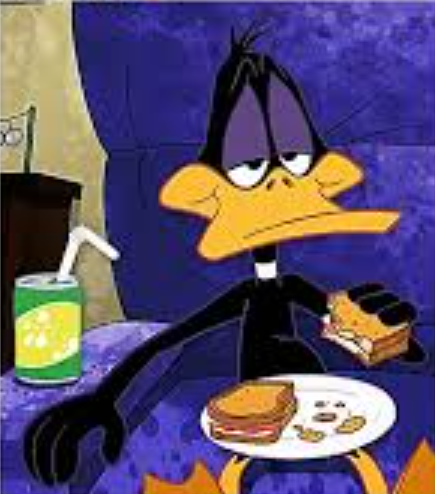
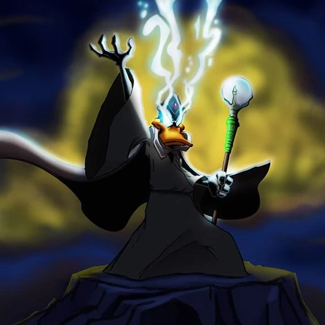
Sobre a Empresa
A UMB é uma escola de magia criada para adultos cansados da rotina CLT
que ainda querem acreditar em algo maior do que a repetição dos dias.
Aqui, a magia não é fantasia distante — é aprendizado, criatividade e
transformação aplicada ao cotidiano.
Entre estudos arcanos e habilidades incomuns, a UMB é um refúgio para quem
quer reinventar sua forma de viver, aprender e enxergar o mundo.
Mais do que uma escola, a UMB é um convite para desacelerar, explorar o desconhecido
e redescobrir a magia que ainda existe em cada pessoa.
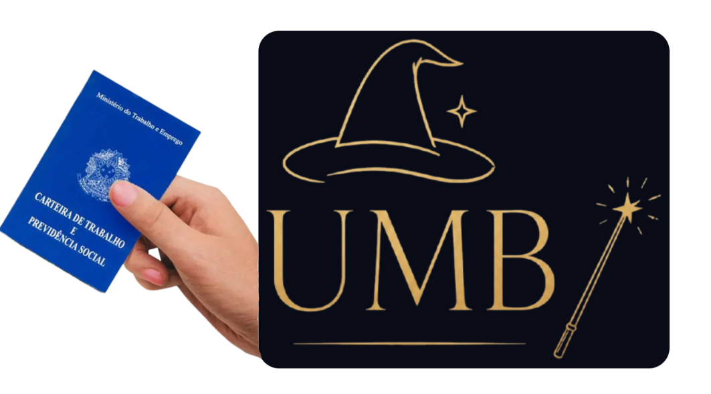
Vida na UMB
Na UMB, o aprendizado acontece no ritmo de cada pessoa.
Aqui não existe pressa, apenas evolução gradual e prática.
A rotina mistura estudos mágicos, descanso e reflexão sobre a vida adulta.
Cada aluno aprende a lidar com o próprio cansaço de forma consciente.
Mais do que estudar magia, é sobre aprender a viver melhor.